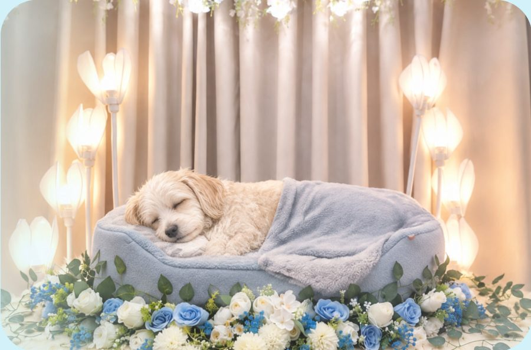
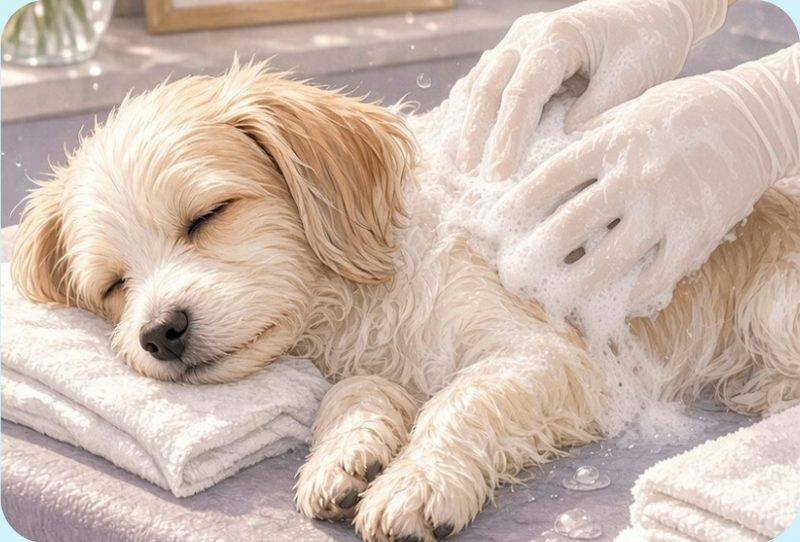
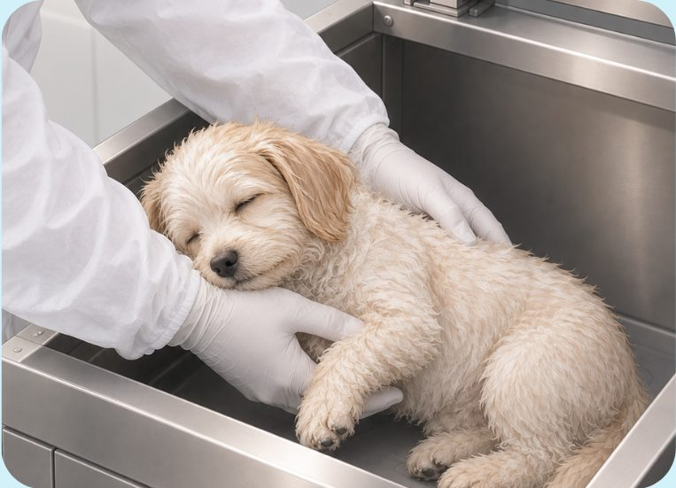
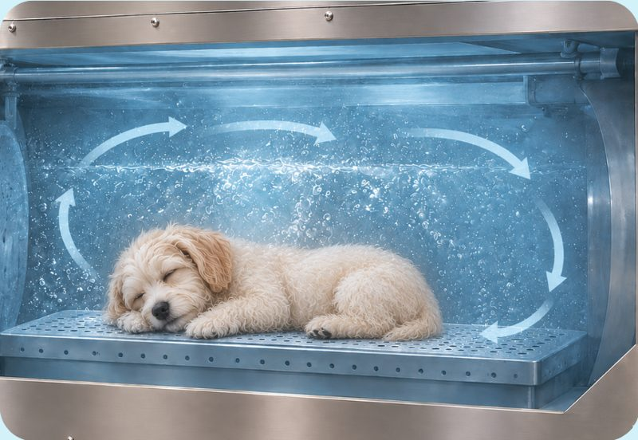
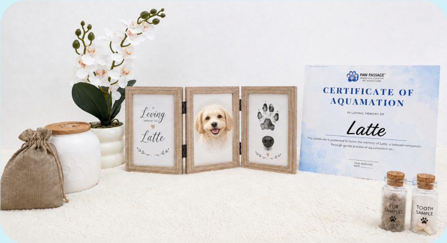

A gentle, water-based farewell for the pet you love.
There is a gentler way to honor your beloved pet. Aquamation is a water-based alternative to traditional cremation, using a gentle process that is environmentally conscious and respectful.
Compassionate pet aftercare in San Jose City, Nueva Ecija.

What is aquamation?
Aquamation, also known as water cremation or alkaline hydrolysis, is a gentle and environmentally friendly aftercare process. Using warm water and a specialized alkaline solution, the natural process of decomposition is accelerated in a controlled environment. This process leaves only the pet's mineral remains, which are carefully dried, processed, and returned to the family.
Unlike flame cremation, aquamation uses no direct fire and is considered a gentler alternative.
Read more about aquamationOur simple process
Contact us
Reach out to us by phone, email, or online. We'll answer your questions and help you understand the available options.
Arrange your pet's care
Choose the package that feels right for you and, with different inclusions to honor your pet in a meaningful way.
Drop-off or pick-up
Bring your pet to our facility or arrange for pick-up. If needed, you can finalize your service package at this time and complete payment or any required deposit. From here, your pet remains in our care.
Your chosen service

Aquamation with Memorial Viewing: your pet will be lovingly groomed and thoughtfully prepared for a peaceful viewing and final goodbye. 
Aquamation Only: your pet will be gently cared for and respectfully placed into the aquamation machine. Aquamation process

Your pet is gently cared for in the aquamation machine, where warm water, gentle heat, and a natural process respectfully return them to their natural elements. Return of ashes and package inclusions

Once the aquamation process is complete, we carefully prepare the ashes and other included items according to your chosen package. These are then returned to you. [Confirm which items come with each package]
Why choose aquamation?
Gentle & respectful
A peaceful, water-based farewell without direct flame.
Eco-friendly
Uses less energy and has a lower environmental impact than traditional flame cremation.
More mineral remains returned
Families typically receive more of their pet's mineral remains for memorialization.
Natural process
Aquamation gently replicates the natural cycle of decomposition in a controlled environment.
Our services
Aquamation with Memorial Viewing
Your pet is lovingly groomed and thoughtfully prepared for a peaceful viewing and final goodbye.
Aquamation Only
Your pet is gently cared for and respectfully placed into the aquamation machine.
Drop-off or pick-up
Bring your pet to our facility or arrange for pick-up. [Add pick-up areas and fees]
Memorial keepsakes
Urns, paw prints, fur keepsakes, jewelry and photo memorials. Choose what feels right for your family.
Kind words from families
[Real testimonial]
[Name, pet's name]
[Real testimonial]
[Name, pet's name]
Where we serve
[Cities / areas you serve] Not sure if we cover your area? Ask us.
Common questions
Have more questions about aquamation or pet aftercare?
Whether you're planning ahead or need immediate aftercare for your beloved pet, Paw Passage is here to help. We're here to answer your questions, explain your options, and assist you every step of the way.
We're here every step of the way.
Pet aquamation
A quiet, water-based way to say goodbye to a dog, cat or other companion.
What it is
Aquamation, also known as water cremation or alkaline hydrolysis, is a gentle and environmentally friendly aftercare process. Using warm water and a specialized alkaline solution, the natural process of decomposition is accelerated in a controlled environment. Only the pet's mineral remains are left, and these are carefully dried, processed, and returned to the family.
How it works, step by step
When your pet arrives
You can bring your pet to our facility or arrange pick-up. From that point your pet remains in our care. [Describe your identification process]
Your chosen service
With a memorial viewing, your pet is groomed and prepared for a peaceful final goodbye. With aquamation only, your pet is gently cared for and respectfully placed into the aquamation machine.
The aquamation
Warm water, gentle heat, and a natural process respectfully return your pet to their natural elements.
Return of ashes
We carefully prepare the ashes and any other items included in your package, and return them to you.
How it differs from flame cremation
Aquamation
Water and gentle warmth, with no direct fire. Uses less energy and has a lower environmental impact.
Flame cremation
High heat and fire. The most familiar option, and often what families expect.
How long does it take?
The process itself takes [X hours]. Most families receive remains within [X–Y days].
Questions
Pet memorials & keepsakes
There is no right way to remember. Choose what feels like them. Everything here is optional.
Urns
[Materials, sizes, engraving]
Paw prints
[Clay, ink, etc.]
Fur clippings
[Describe]
Memorial jewelry
[Describe]
Photo memorials
[Describe]
Other tributes
[Garden stones, plantable items, etc.]
Pricing
Clear prices, so there are no surprises at a hard time.
Owner: replace every highlighted placeholder with your real price. Nothing here is a real price.
Service packages
| Package | What's included | Price |
|---|---|---|
| Aquamation with Memorial Viewing | Grooming and preparation for a peaceful viewing and final goodbye, then aquamation. [List inclusions] | [Price] |
| Aquamation Only | Gentle care and aquamation. [List inclusions] | [Price] |
| [Package name] | [Inclusions] | [Price] |
Optional memorial products
| Item | Price |
|---|---|
| Urn | [Price range] |
| Paw print | [Price] |
| Fur keepsake | [Price] |
| Memorial jewelry | [Price] |
Pickup & transportation
[Pickup fees by area or distance, after-hours fee if any]
Payment
You can finalize your package and complete payment or any required deposit at drop-off or pick-up. [Accepted payment methods and deposit amount]
When a pet dies
You are not alone, and there is no need to rush. Here is what you can do, one step at a time.
Right now
Take a breath. Give yourself and your family a moment. If your pet passed at home, you can stay with them as long as you need.
Keeping your pet safe until arrangements are made
Gently lay your pet on a towel or blanket in a cool place, away from heat. If you need to wait more than a few hours, ask us or your vet what is best. [Add your own guidance]
Contacting us
Call or text any time. [After-hours details] We will ask a few simple questions and explain what comes next.
When your pet arrives
They are carefully checked in and identified so they stay with you throughout. [Your process]
The aquamation and return of remains
Your pet is cared for through a gentle, water-based process, and their remains are returned to you in your chosen urn. Read the full steps.
Memorial options
Paw prints, fur keepsakes, urns and more are available whenever you are ready. See options.
Your questions
Grief for a pet is real. [Add a pet-loss support line or counselor link]
About us
Why we care for pets this way.
Our story
[Why you started, business history, what drives you]
Who we are
[Owner name]
[Bio]
[Staff name]
[Role]
Our values
[Your values, in your own words]
Credentials
[Licenses, memberships, certifications. Add only what is true and verifiable]
In loving memory
A place to remember the pets who made our lives better. Families can share a photo and a few words.
Owner: add a tribute only with the family's written permission. [Add a submission form or email for families]
Frequently asked questions
Short, honest answers. If yours is missing, just ask us.
Contact us
Call, text or write. We answer gently, and there is no pressure.
Send a message
Reach us
Phone: 0912 441 0065
Text: 0912 441 0065
Email: pawpassagememorials@gmail.com
Address: Unit 9, Mokara Bldg., Sta. Romana St., Abar 1st, San Jose City, Nueva Ecija 3121
Hours: [Hours]
Service area: [Area]
After hours / urgent: [Your emergency instructions]
Get directions [Add your Google Business Profile link]
Privacy policy
[Placeholder. Have your privacy policy written or reviewed by a qualified professional before launch.]
Terms & conditions
[Placeholder. Have your terms written or reviewed by a qualified professional before launch.]